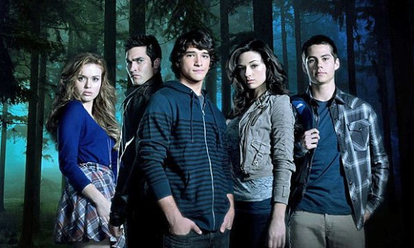
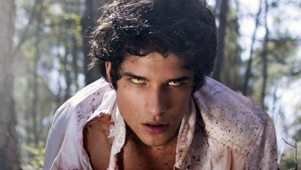

História
Teen Wolf é uma série de televisão americana desenvolvida por Jeff Davis para a MTV. A série é vagamente baseada no filme de 1985 de mesmo nome. Scott Gregorio Howard McCall, interpretado por Tyler Posey, é um adolescente que foi mordido por um lobisomem numa noite enquanto procurava um corpo junto com seu melhor amigo Mieczylaw "Stiles" Stilinski, interpretado por Dylan O'Brien, em uma floresta na cidade, Beacon Hills na Califórnia. Depois disso o jovem adolescente precisa lidar com novas mudanças , novos desafios em sua vida e principalmente salvar seu amigos de futuros perigos.
Teen Wolf estreou dia 5 de Junho de 2011, na sequência do MTV Movie Awards 2011. Em 24 de Julho de 2014, a MTV renovou Teen Wolf para uma quinta temporada contando com 20 episódios, que estreou dia 29 de Junho de 2015.[2][3] Em 9 de Julho de 2015, Teen Wolf foi renovada para uma sexta temporada.[4] A série recebeu uma crítica relativamente positiva dos críticos em geral.
No dia 24 de Setembro, é anunciado oficialmente que Teen wolf irá voltar desta vez para um filme no Paramount Plus,sem data em concreta mas prevista para 2022.
Sinopse
A série gira em torno de Scott Gregorio Howard McCall, um estudante do ensino médio que vive na cidade de Beacon Hills. A vida de Scott muda drasticamente quando ele é mordido por um lobisomem em uma noite, enquanto vagava pela floresta em busca de um cadáver junto ao seu melhor amigo "Stiles".
Scott então, torna-se um lobisomem e deve aprender a conviver com sua nova identidade problemática e com sua vida adolescente, contando com a ajuda de:
Mieczysław "Stiles" Stilinski, seu melhor amigo humano;
Celestine Allison Argent, seu primeiro interesse amoroso que vem de uma família de caçadores de lobisomens;
Lydia Camille-Grace Martin, uma banshee e melhor amiga de Allison; Jackson Whittemore um kanima e ex-rival de Scott;
Derek Hale, um lobisomem misterioso com um passado obscuro;
Malia Elizabeth Tate, uma werecoite;
Kira Ga-Yoon Yukimura, uma kitsune e seu interesse amoroso depois do fim de seu relacionamento com Celestine Allison Argent;
Liam Eugene Dunbar e Hayden Romero, lobisomens betas de Scott, bem como vários outros lobisomens que vem até Beacon Hills.
Ao longo de sua jornada, Scott faz também vários inimigos, os quais ameaçam a segurança de seus entes queridos, e também os demais moradores de Beacon Hills.
